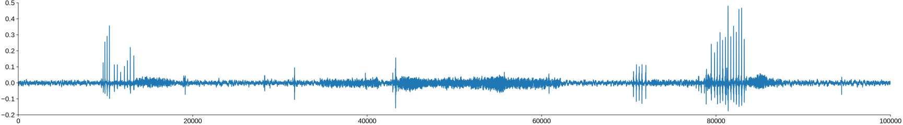

Realtime annotations¶
Setup¶
GPU or not?
USE_GPUdisable eager execution speeds up ~6x
import os
USE_GPU = True # USE_MP should be False if USE_GPU for best performance
nb_gpu = 1 if USE_GPU else 0
os.environ['CUDA_VISIBLE_DEVICES'] = '0' if USE_GPU else '-1'
try:
import tensorflow as tf
from tensorflow.python.framework.ops import disable_eager_execution
disable_eager_execution()
physical_devices = tf.config.list_physical_devices('GPU')
print(physical_devices)
USE_GPU = len(physical_devices)>0
except:
pass
[]
import numpy as np
import dss.utils
import dss.predict
import scipy.signal
import matplotlib.pyplot as plt
import scipy.io.wavfile
import time
import subprocess
plt.style.use('ncb.mplstyle')
Load the model and runtime parameters¶
model_filename = 'models/dmel_single_rt/20200430_201821'
model, params = dss.utils.load_model_and_params(model_filename)
pulse_index = params['class_names'].index('pulse')
sine_index = params['class_names'].index('sine')
samplerate = params['samplerate_x_Hz']
interval = params['nb_hist'] / samplerate
print(f"Model expects input shape {model.input_shape[1]} samples and {model.input_shape[2]} channel(s).")
Model expects input shape 256 samples and 1 channel(s).
Load a recording¶
Samplerates of the recording and of the data the model was trained with should match. Otherwise resample the recording to match the model using scipy.signal.resample_poly(x=recording, up=int(recording_samplerate), down=int(samplerate), axis=0)
recording_samplerate, recording = scipy.io.wavfile.read('dat/dmel_song_rt.wav')
recording = np.atleast_2d(recording).T
plt.figure(figsize=(30, 4))
plt.plot(recording[:100_000]) # plot the first 10 seconds
plt.show()
print(f"Sample rate of the recording ({recording_samplerate}Hz), sample rate expected by the model ({samplerate}Hz). Both should match.")

Sample rate of the recording (10000Hz), sample rate expected by the model (10000Hz). Both should match.
Define a virtual microphone¶
The microphone takes a full recording and returns a chunk of data at regular intervals given by the chunk duration.
def virtual_microphone(data: np.array, interval: float, samplerate: float, block: bool = True):
RUN = True
current_position = 0
t1 = time.time() - 0.025
t0 = time.time()
while RUN:
current_position += interval * samplerate
start_sample = int(current_position)
end_sample = int(current_position + interval * samplerate)
chunk = data[start_sample:end_sample]
if block:
while (t1-t0)<interval: # wait til interval has elapsed
time.sleep(0.001)
t1 = time.time()
if end_sample >= data.shape[0]:
RUN = False
yield None
else:
yield chunk
t0 = time.time()
# t1 = t0
mike = virtual_microphone(recording, interval, samplerate, block=True)
rec = next(mike)
print(f"Microphone produces {rec.shape[0]} samples and {rec.shape[1]} channel(s) per chunk.")
print('Consuming and plotting 100 chunks...')
recording_latencies = []
for _ in range(100):
with dss.utils.Timer() as t:
rec = next(mike)
recording_latencies.append(t.elapsed * 1000)
plt.plot(rec)
plt.ylim(-1, 1)
plt.title('Individal chunks')
plt.xlabel('Samples')
plt.xlim(0, rec.shape[0])
plt.show()
print(f"Takes {np.median(recording_latencies):1.1f} ms to return {rec.shape[0] / samplerate * 1000:1.1f} ms of audio data.")
Microphone produces 256 samples and 1 channel(s) per chunk.
Consuming and plotting 100 chunks...
Takes 26.3 ms to return 25.6 ms of audio data.
Define simple detection¶
demonstrate with chunk with sine and pulse
def report_song(prediction, pulse_index, sine_index):
report = 'pulse? ' + ('yes' if np.max(out[:, pulse_index]) > 0.7 else ' no')
report += ' sine? ' + ('yes' if np.max(out[:, sine_index]) > 0.7 else ' no')
return report
for _ in range(9):
d = next(mike)
d = d[np.newaxis, ...]
out = model.predict(d, verbose=0)
plt.subplot(211)
plt.plot(d[0, ...])
plt.subplot(212)
plt.plot(out[0])
plt.legend(params['class_names'])
WARNING:tensorflow:From /Users/clemens10/miniconda3/envs/dss_tf23/lib/python3.7/site-packages/tensorflow/python/keras/engine/training_v1.py:2070: Model.state_updates (from tensorflow.python.keras.engine.training) is deprecated and will be removed in a future version.
Instructions for updating:
This property should not be used in TensorFlow 2.0, as updates are applied automatically.
<matplotlib.legend.Legend at 0x7fbb68101a90>
Run inference¶
estimate latencies
latencies = []
runs = 0
while runs < 100:
runs += 1
with dss.utils.Timer() as dt:
d = next(mike) # get a new chunk
d = d[np.newaxis, ...]
out = model.predict(d, verbose=0) # run inference on the chunk
# detect pulse and sine
print(report_song(out[0, ...], pulse_index, sine_index))
latencies.append(dt.elapsed * 1000)
pulse? yes sine? yes
pulse? yes sine? yes
pulse? yes sine? yes
pulse? yes sine? yes
pulse? yes sine? yes
pulse? yes sine? no
pulse? yes sine? yes
pulse? yes sine? yes
pulse? yes sine? yes
pulse? yes sine? yes
pulse? yes sine? yes
pulse? yes sine? yes
pulse? yes sine? yes
pulse? yes sine? yes
pulse? yes sine? yes
pulse? yes sine? yes
pulse? yes sine? yes
pulse? yes sine? yes
pulse? yes sine? yes
pulse? yes sine? yes
pulse? yes sine? yes
pulse? yes sine? yes
pulse? no sine? no
pulse? yes sine? yes
pulse? yes sine? yes
pulse? yes sine? yes
pulse? yes sine? yes
pulse? yes sine? yes
pulse? yes sine? yes
pulse? yes sine? yes
pulse? yes sine? yes
pulse? yes sine? yes
pulse? yes sine? yes
pulse? yes sine? yes
pulse? yes sine? yes
pulse? no sine? no
pulse? no sine? no
pulse? yes sine? yes
pulse? yes sine? yes
pulse? yes sine? yes
pulse? yes sine? yes
pulse? no sine? no
pulse? no sine? yes
pulse? no sine? no
pulse? yes sine? yes
pulse? yes sine? yes
pulse? yes sine? yes
pulse? no sine? no
pulse? yes sine? yes
pulse? yes sine? yes
pulse? yes sine? yes
pulse? yes sine? yes
pulse? yes sine? yes
pulse? no sine? no
pulse? yes sine? yes
pulse? yes sine? yes
pulse? yes sine? yes
pulse? yes sine? yes
pulse? yes sine? yes
pulse? yes sine? yes
pulse? yes sine? yes
pulse? yes sine? yes
pulse? yes sine? yes
pulse? yes sine? yes
pulse? yes sine? yes
pulse? no sine? no
pulse? yes sine? yes
pulse? yes sine? yes
pulse? yes sine? yes
pulse? yes sine? yes
pulse? no sine? no
pulse? yes sine? yes
pulse? no sine? no
pulse? no sine? no
pulse? yes sine? yes
pulse? no sine? yes
pulse? no sine? no
pulse? no sine? no
pulse? yes sine? yes
pulse? yes sine? yes
pulse? yes sine? yes
pulse? yes sine? no
pulse? yes sine? yes
pulse? yes sine? yes
pulse? yes sine? yes
pulse? yes sine? yes
pulse? yes sine? yes
pulse? yes sine? yes
pulse? yes sine? yes
pulse? yes sine? yes
pulse? yes sine? yes
pulse? yes sine? yes
pulse? yes sine? yes
pulse? yes sine? yes
pulse? yes sine? yes
pulse? yes sine? yes
pulse? yes sine? yes
pulse? no sine? no
pulse? yes sine? yes
pulse? no sine? yes
Evaluate latencies¶
Timing on GPUs can be more variable than on CPUs since a major contributor to latency is the transfer of data from/to the GPU. Hence, warmup!
annotation_latencies = np.array(latencies) - np.median(recording_latencies)
print('Annotation latencies')
print(f' 5, 50, 95 percentiles: {np.percentile(annotation_latencies, [5, 50, 95])} ms')
print(f' min {np.min(annotation_latencies):1.2f} ms, max {np.max(annotation_latencies):1.2f} ms')
plt.figure(figsize=(5, 5))
plt.subplot(211)
plt.plot(np.array(annotation_latencies))
plt.ylabel('Annotation latency [ms]')
plt.ylim(0, np.max(annotation_latencies))
plt.show()
Annotation latencies
5, 50, 95 percentiles: [4.4279488 5.0589635 5.8320642] ms
min 3.90 ms, max 6.00 ms